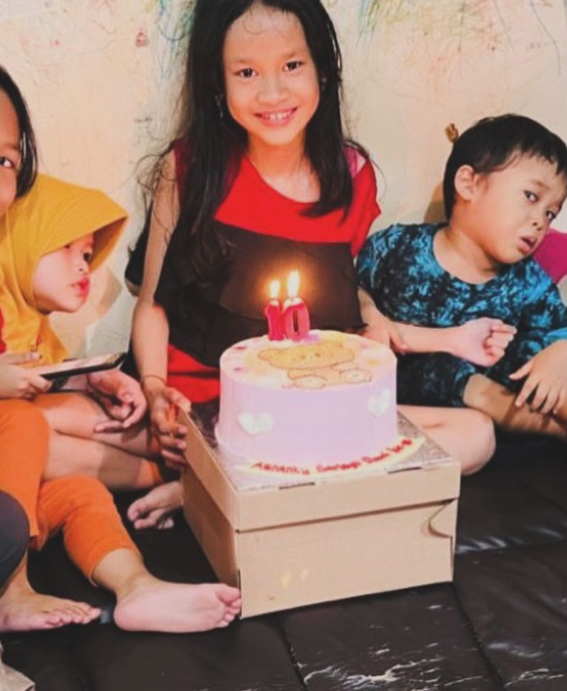

I made this website just for u "Ashanty Sariayu Dewi"
Enter Secret PIN
1
2
3
4
5
6
7
8
9
C
0
PIN Salah!
Salah nih 😝 Coba pakai tanggal lahir kamu
haii Achaaaa! 🌻
Gimana hari-hari nya akhir-akhir ini? Semoga selalu baik yaa. Lagi seneng atau lagi banyak kepikiran nihh? Kalau lagi capek atau ada yang bikin kepikiran, semoga semuanya cepat selesai yaaa.
Terus, hari ini udah sarapan belum?? Jangan sampai telat makan yaa. Udah mandi jugaa? hhehe. Terusss, udah nonton Windah atau dracin belumm? Atau lagi sibuk ngelakuin aktivitas yang lain nihh? Semoga apa pun yang lagi kamu lakuin hari ini lancar yaa.
Sebenernya aku mau nyampein sesuatu...
Maaf yaaa kalau akhir-akhir ini aku sering bikin chat jadi centang satu. Kamu juga pasti tau kan kenapanya. Maaf banget kalau itu bikin kamu nunggu atau bikin suasana jadi beda.
Terus... akhir-akhir ini aku juga ngerasa aku jadi ngebosenin gitu nyak. Rasanya aku udah nggak selucu dulu, nggak seseru dulu. kalau misalnya kamu ngerasa kayak gitu, aku minta maaf banget yaa. Tapi kalau ternyata kamu nggak ngerasa sama sekali, syukur deh. Mungkin ini cuma ketakutan aku aja. Aku cuma takut suatu saat kamu ngerasa bosen sama aku.
Kalau boleh jujur, aku pengen banget suatu hari nanti kita bisa main bareng, jalan-jalan bareng, nonton bareng, ngobrol langsung tanpa harus lewat chat. pasti seru banget sihh yaa. Cuma sayangnya sekarang masih belum bisa. Semoga nanti, di waktu yang tepat, kita beneran bisa ngelakuin itu semua.
Maaf yaa, buat sekarang aku cuma bisa bikin hal-hal sederhana kayak gini. semoga walaupun sederhana, ini bisa bikin kamu senyum atau seenggaknya bikin hari kamu sedikit lebih baik.
Terus yaa, kalau lagi ada masalah, lagi capek, lagi sedih, atau cuma pengen cerita hal random juga gppaa.. cerita aja yaa ke aku. Aku bakal dengerin kok. Siapa tau dengan kamu cerita, beban kamu jadi lebih ringan. Dan siapa tau juga aku bisa bantu, walaupun cuma sedikit. Jadi jangan dipendem sendirian yaa.
maaf jugaa kalau pesan ny kedengeran alay. hhehe. Soalnya jujur aja, akhir-akhir ini aku sempet kepikiran... jangan-jangan kamu udah mulai bosen sama aku. mungkin itu cuma perasaan aku aja sihh... Karena jujur aku percaya sama kamu. Aku cuma lagi kepikiran aja, makanya pengen ngomong daripada dipendem sendiri.
udaa deh, itu aja yang mau aku sampeinn.
maaf nihh kalau ganggu waktu kamu lagi nonton, lagi istirahat, atau lagi sibuk sama aktivitas yang lain.
semoga hari-hari nya selalu dipenuhi hal-hal baik, selalu dikasih kesehatan, dimudahin semua urusannya, dan semoga senyum nya nggak pernah hilang.
makasiii yaa, udah mau baca semuanya sampai selesai.
- Ikramu
coba pose dulu sini pencet tombol kamera nya yaa 🤭
ihh miripp... hehhehe bercandaa, salah akuu coba pencet dulu

wihh lucu naa🤭, semoga senyum / nyengir kamuu ngga pernah pudar yaa whatever the problem, If anything happens, I'm here, okay?